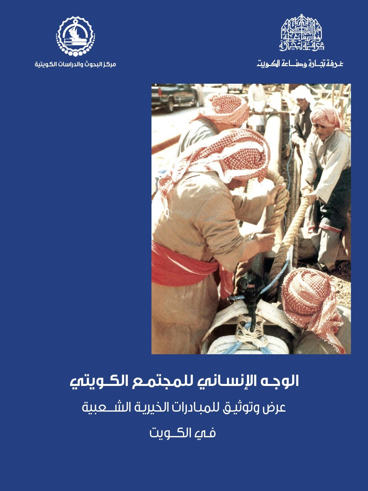

Book on charitable work in Kuwait, with figures to the end of 2015 · Book pages, Al-Wajh Al-Insani lil-Mujtama Al-Kuwaiti: Ard wa Tawthiq lil-Mubadarat Al-Khayriya Al-Sha'biya fil-Kuwait, Kuwait Chamber of Commerce and Industry and the Center for Research and Kuwaiti Studies
Masjid Al-Qatami, Jassim Abdulaziz Al-Qatami's 1954 committee, a mosque of Mariam Abdulaziz and the charity of Roqaya Abdulwahab, in «The Humanitarian Face of Kuwaiti Society»
What it is
Page 66, in the table of the mosques of the Sharq quarter, lists Masjid Al-Qatami, founded by Malka bint Mohammed Al-Jabr Al-Ghanim in 1834. Page 69, in the list of mosques of the Capital Governorate, names «Masjid Mariam Abdulaziz Al-Qatami» in Shuwaikh residential. Page 103 says the Popular Committee for Collecting Donations was founded in 1954 on the initiative of a group of Kuwait's notables: Abdulaziz Al-Saqr, Yousef Abdulaziz Al-Fulaij, Mohammed Abdulmohsen Al-Kharafi, Abdulaziz Mohammed Al-Shaya, Mohammed bin Yousef Al-Nisf, Marzouq Abdulwahab Al-Marzouq, Bader Al-Salem Al-Abdulwahab and Jassim Abdulaziz Al-Qatami. Page 110, in the list of charitable foundations in Kuwait to the end of 2015, lists number 5: «Mabarrat Roqaya Abdulwahab Al-Qatami for charitable works and cancer patients».
Why it matters
One book records the family's mosque in Sharq, Jassim as a founder of the 1954 Popular Committee for Collecting Donations, a mosque in the name of Mariam Abdulaziz Al-Qatami, and a charitable foundation in the name of Roqaya Abdulwahab Al-Qatami.
Page copies


Notes
Only the first pages are shown here. Family members who sign in can see all 5 pages.
Others named
Sources
Al-Wajh Al-Insani lil-Mujtama Al-Kuwaiti, Kuwait Chamber of Commerce and Industry and the Center for Research and Kuwaiti Studies, pages 66, 69, 103 and 110
How this text was made: The year of publication is not on the pages sent; the figures run to the end of 2015. Al-Owaid's Mu'jam Masajid Al-Kuwait confirms that the mosque is that of Mariam Abdulaziz Abdulwahab Al-Qatami, wife of Yousef Eissa. Roqaya is linked to the only Roqaya bint Abdulwahab in the tree; to be confirmed by the family.
Open in the interactive site